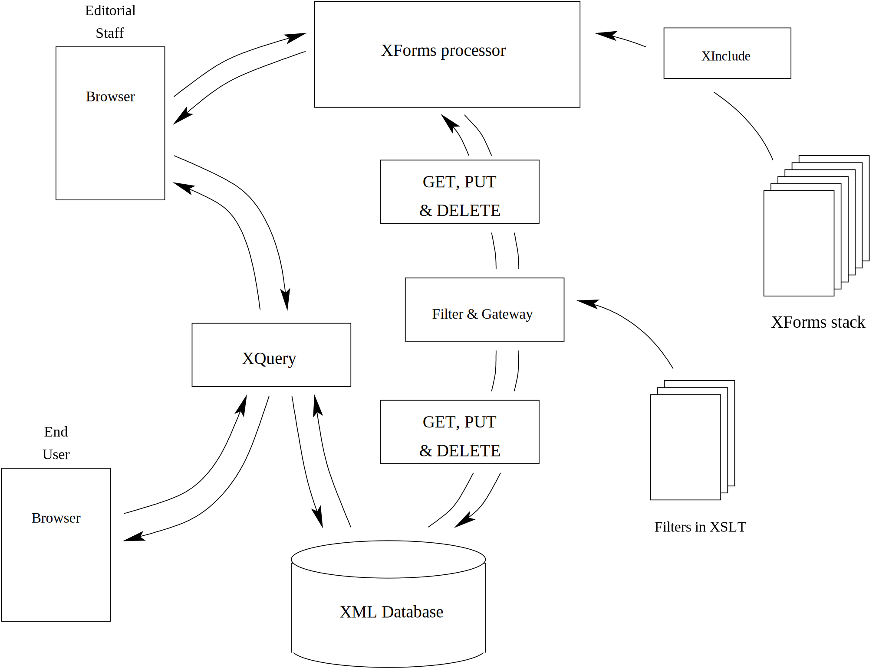

Installing and configuring the MerMEId editor
Digital Infrastruktur og Service,
The Royal Library,
Copenhagen
slu@kb.dk
Dansk Center for Musikudgivelse
The Royal Library,
Copenhagen
atge@kb.dk
Table of Contents
For information on how to use the editor, please refer to the manual
Copyright 2013-2016 Danish Center for Music Editing
Licensed under the Apache License, Version 2.0 (the "License"); you may not use this file except in compliance with the License. You may obtain a copy of the License at
http://www.apache.org/licenses/LICENSE-2.0Unless required by applicable law or agreed to in writing, software distributed under the License is distributed on an "AS IS" BASIS, WITHOUT WARRANTIES OR CONDITIONS OF ANY KIND, either express or implied. See the License for the specific language governing permissions and limitations under the License.
1. Overview
2. Requirements
2.1. The Server
This system is lightweight. It is only tested under Apache HTTPD together with Tomcat servlet container under Red Hat and SUSE Linux. We have not been able to run it on less then 3GB, and recommend 4GB internal memory. You should allocate at least 2GB to the java instance that runs the various components.. On the other hand, 80GB of hard-disk would be a lot.
2.2. Installing the basic software environment.
In addition it requires the following readily available software on the server:
-
Install Apache-Tomcat: We have recently run it in production on versions 7.* of Apache-Tomcat. The advantage is that you get all the java needed without further ado. The current distribution has been run under java 7. As of June 2016, we develop under and Java SDK 1.8.0_91 & Apache Tomcat/8.0.32.
In the following we assume that tomcat lives in
/<PATH TO>/tomcat
-
Install Orbeon: We are using version
4.9, Community Edition. (Orbeon
Downloads)
cp orbeon.war /<PATH TO>/tomcat/webapps/
We are using some extra files, among those is a jsp script for connecting our form to orbeon. They need to be installed inside the orboen webapp
cd /home/xml-store/editor mkdir /<PATH TO>/tomcat/webapps/orbeon/xforms-jsp/mei-form cp orbeon/mei_form.jsp /<PATH TO>/tomcat/webapps/orbeon/xforms-jsp/mei-form/index.jsp
The jsp is dependent on a package called commons-httpclient. We've added it in the distribution. In addition we are dependent on that orbeon forwards the user's credentials to the backend components, notably the filter web app. This requires setting a config property called oxf.xforms.forward-submission-headers. You do this by copying
cp orbeon/properties-local.xml /<PATH TO>/tomcat/webapps/orbeon/WEB-INF/resources/config/
NB! If have other local customizations in that file, you might need to edit it rather than copying our version.
-
Install eXist: We're using version
2.2 (the
stable release as of June 2016)
Prepare the code and build the application by first
running the installer
Install eXist: We're using version 2.2. Prepare
the code and build the application by first running the installer
java -jar eXist-<version number>.jar
This will unpack the distribution into a directory of your choice. Let's call it eXist. In that directory you can repack it as a *.war file which can be installed in you tomcat.
cd eXist ./build.sh dist-war
That will create a file called something like dist/exist-<version number>.war. This file should be installed as exist.war in you tomcat.
cp dist/exist-*.war /<PATH TO YOUR>/tomcat/webapps/exist.war
-
Install Orbeon: We are using version
4.9, Community Edition. (Orbeon
Downloads)
- Install apache httpd: If it isn't installed already. We've used the one that comes with the Linux distribution. Should work with Apache/2.2.3 or better. Ensure that you have mod_proxy and mod_proxy_ajp installed.
- xerces2-j (i.e., the java version)
- xalan-j (xslt processor, java version)
3. Building & installing MerMEId
To compile and build you need ant, which is available as a package for most versions of Linux. It can also be downloaded from Apache ANT project.
Clone and install the MerMEId: We suggest that you create a directory called /home/xml-store and unpack it there. For example:
git clone git@github.com:Det-Kongelige-Bibliotek/MerMEId.git
There should then appear a directory called MerMEId/trunk. In it you will find the following:
| File or Directory | Description |
|---|---|
| build.xml | There is a global build.xml in the source root and one in each of filter and mermeid. They are used by ant for compiling and building. |
| local_config |
Contains configuration files that are needed for buidling and/or
running MerMEId
and its auxilliary applications. The file names are of the form
name.suffix_instance. The name is what it sounds
like, suffix determines what kind of file it is. For example,
xqm is a xquery module. instance
is for keeping track of different instances of MerMEId, which is
useful if you have multiple ones for different purposes or
projects. We have demo, developement and production versions of
the system. To build you have to choose an instance and a target.
ant -Dwebapp.instance=<instance name> <target name>A usage example could be ant -Dwebapp.instance=distro war |
| filter |
a number of JAVA servlets. You can build a war file using ant. To build it you'll need to edit a java property file in local_config local_config/http_filter.xml_distro (see Appendix A. When done you must recompile the package using ant: cd <path to source> ant -Dwebapp.instance=distro war This will build the distro-instance of the application. If you don't have ant installed, you can always unzip the filter.war coming with the distribution, edit http_filter.xml and then repack it as a war file. For documentation of the filter software itself, see its API javadoc. |
| mermeid | the forms. The configuration here lives in local_config/mermeid_configuration.xml_distro
and is copied into forms/mermeid_configuration.xml upon
building. You build everything in one go
ant -Dwebapp.instance=distro warSee above for a description of the webapp.instance concept |
| orbeon/mei_form.jsp orbeon/properties-local.xml |
A JSP script which should be installed as <your tomcat>/webapps/orbeon/xforms-jsp/mei-form/index.jsp -- this is basically an xinclude processor More about this above |
| xqueries | Scripts used for searching and navigating the collection |
In addition, there are a number of files. filter.war, editor.war INSTALL.html (this file).
You have a choice. You can deliver the form through Apache HTTPD. That is an advantage if you are developer and need to customize the code code. But if you like to keep it as it is, then it might be easier to deploye it in your tomcat.
cp editor.war /<PATH TO YOUR>/tomcat/webapps/editor.war
See below how apache is configured in the two cases.
4. Configuration
Ensure that Apache HTTPD and Apache Tomcat both starts with the operating system. A requisite for the following is that they are healthy, up and running. We assume they that they are running on port numbers 80 and 8080 respectively on a server called mei.example.org.
-

Figure 1. eXist interface. The Admin functions are down to the left.
Figure 2. eXist admin client. What you see is the situation after eXist is installed and configured. You see the dcm collection owned by the dcm user, and also the XQuery list_files.xq which is used for many tasks. See main text.Configure eXist: The database engine is entirely web based, and all work of it can be done via an ordinary browser or a web service client bundled with the eXist. Please not that the Royal Library cannot not provide support for this or indeed any other software we haven't authored in house.
Direct your browser to http://mei.example.org:8080/exist/ (i.e., to where you installed exist). You will get a page as in Figure 1.
- Set a password for the database admin. This is done under Admin < User management.
- Create the dcm collection and the user dcm. We do all the adminstrative tasks using the JNLP based client IcedTea. It should work on all platforms. Click on "Web Start Client" and log on as admin with the user credentials you just created. The admin's credentials should be put into the configuration files Figure 2 shows the client after installation and configuration.
-
Configure the xqueries.
Some xqueries need more privileges than the rest (for copying and publishing resources). Those scripts are using login.xqm. You need to copy login.xqm_distro to login.xqm and edit it to provide credentials for these operations.
Load the xqueries.The fastest way to do this, is from the command line. Assuming that you are in the xqueries in the source tree. First load the xquery files:
./load_exist.pl --user admin \ --password your_own_very_secret_password \ --host-port mei.example.org:80 \ --load . \ --context "/exist/rest/db" \ --suffix xq
Please note that we've folded the command line using '\' just for typographical reasons.
-
Repeat this for the xquery modules:
./load_exist.pl --user admin \ --password your_own_very_secret_password \ --host-port mei.example.org:80 \ --load . \ --context "/exist/rest/db" \ --suffix xqm
- Prepare the Standard Bibliography
Make a local copy of the standard bibliography
cp local_config/standard_bibliography.xml_distro \ xqueries/library/standard_bibliography.xml - Load some content:
After configuring eXist, it is just to populate the database with some content.
cd xquery ./load_exist.pl --user admin \ --password your_own_very_secret_password \ --host-port mei.example.org:8080 \ --load . \ --context /exist/rest/db/ \ --suffix xml
To install everything you need to do this for --suffix xml, xq, xsl, xqm and css.
- Create the public collection. Only needed when using out way of publishing stuff.
-
Configure Apache HTTPD
How you configure HTTPD depends on how you store and access the forms, in Apache or in Tomcat. I you do the former enter the following in the your apache configuration file.
# This is how to configure stuff in Apache: Alias "/editor" "/home/xml-store/MerMEId/mermeid <Location "/editor"> Options None Order allow,deny Allow from all </Location> ProxyPass /storage "ajp://mei.example.org:8009/exist/rest/db" ProxyPass /orbeon "ajp://mei.example.org:8009/orbeon" ProxyPass /filter "ajp://mei.example.org:8009/filter"
On the other hand, if you put them in the application server through deploying the editor.war. Enter the following in your apache configuration.
ProxyPass /editor "ajp://mei.example.org:8009/editor ProxyPass /storage "ajp://mei.example.org:8009/exist/rest/db" ProxyPass /orbeon "ajp://mei.example.org:8009/orbeon" ProxyPass /filter "ajp://mei.example.org:8009/filter"
5. Testing and Getting Started
The main component in the user interface is the list_files.xq which directs the editorial staff to all the other components. That script should have the URI:
http://mei.example.org/storage/list_files.xq
If everything is up and running you should be able to get an HTML version, a form and a raw XML version for each object in the xml_store.
6. Authentication & Security

Figure 3. Setting the permissions in eXist DB.
The seasoned sysadmin should already have noticed that there is only one component which is protected by some Authentication and Authorization Infrastructure (AAI), and that is the eXist database engine. The sysadmin should also have noticed that the web application filter actually performs these operations and that it has not been mentioned that it is protected.
It is not protected. If you run this application on the open Internet you need to do the following.
- Place the MerMEId server behind a firewall that closes tomcat's port 8080 for external users
-
Protect both the vulnerable components /orbeon and
/filter. Currently we do this using basic
authentication. We put the following in our apache configuration:
<LocationMatch ^/+(orbeon|filter)/+.*> <Limit POST PUT DELETE> AuthType Basic AuthName "MerMEId users & developers." AuthUserFile /home/xml-store/passwordfile Require valid-user </Limit> </LocationMatch>Note that you need to set
tomcatAuthentication="false"
On the appropriate entry in <your tomcat>/conf/server.xml, i.e. change from
<Connector port="8009" protocol="AJP/1.3" redirectPort="8443" />to
<Connector port="8009" protocol="AJP/1.3" redirectPort="8443" tomcatAuthentication="false" />
This will protect the database from the vulnerabilities built into the forms and the filter. You can create the passwordfile like this:
htpasswd -bc passwordfile trusted_user magic_word
This will create a new passwordfile for your trusted_user containing its very secret magic_word. The htpasswd utility should come with the Apache distribution. You could obviously use any AAI scheme supported by the web server.
For the system to be secure, you need to set the update and write permissions in the eXist database. See Figure 3.
7. Backup & restore
At DCM we have eXist DB and its application server on a Linux machine that are backed-up regularly. In addition we take a backup of the XML-files using the admin client. See Figure 4. It is also possible to add the content of an entire directory to the database through the client.
We have some other simple tools:
Figure 4a. Backup.
Figure 4b. Restore(bottom).
- The load_exist.pl (see above) can be used to retrieve files as well as storing them
-
transforms/mei/utils/backup_exist.xsl
can be used for making backup of a large number of files in a
directory on eXist. It transforms an eXist directory listing into a
shell script that uses lwp-mirror to mirror individual files. First
generate the script
xsltproc --stringparam base_uri \ http://mei.example.org/storage/dcm/ \ transforms/mei/utils/backup_exist.xsl \ http://distest.kb.dk/storage/dcm/ > backup.sh
Then make it executable and run itchmod a+x backup.sh ./backup.sh
The script contains code as below.#!/bin/sh if ! [ -d ./db/dcm ]; then mkdir -p ./db/dcm fi lwp-mirror http://mei.example.org/storage/dcm/db/dcm/1285256669.xml \ ./db/dcm/1285256669.xml lwp-mirror http://mei.example.org/storage/dcm/db/dcm/1285323711.xml \ ./db/dcm/1285323711.xml lwp-mirror http://mei.example.org/storage/dcm/db/dcm/1285750781.xml \ ./db/dcm/1285750781.xml lwp-mirror http://mei.example.org/storage/dcm/db/dcm/1289382773.xml \ ./db/dcm/1289382773.xml ...The lines have been folded. - eXist DB comes with a backup.sh script
Appendix A. Configuration files
eXist configuration
In the eXist DB WEB-INF directory there is a file called conf.xml. Load it in your favourite editor and change
-
<xquery enable-java-binding="no" to <xquery enable-java-binding="yes"
-
The XSLT-implementation should be changed from saxon to
xalan. Change from
<transformer class="net.sf.saxon.TransformerFactoryImpl"> <attribute name="http://saxon.sf.net/feature/version-warning" value="false" type="boolean"/> </transformer>to<transformer class="org.apache.xalan.processor.TransformerFactoryImpl" caching="yes"> </transformer>
Filter configuration
<!DOCTYPE properties SYSTEM "http://java.sun.com/dtd/properties.dtd">
<properties>
<comment>HTTP Filter parameters</comment>
<!--
The filter is meant to operate on top of an eXist XML database
-->
<entry key="exist.host">mei.example.org</entry>
<entry key="exist.port">8080</entry>
<entry key="exist.realm">exist</entry>
<entry key="exist.context">/exist/rest/db/dcm</entry>
<entry key="exist.user">admin</entry>
<entry key="exist.password">your very secret word</entry>
<!--
get is the retrieval filter
-->
<entry key="get.dcm">http://mei.example.org/editor/transforms/mei/filter_get.xsl</entry>
<entry key="get.dcm.mime">application/xml</entry>
<entry key="get.dcm.charset">UTF-8</entry>
<entry
key="get.library">http://mei.example.org/editor/transforms/mei/null_transform.xsl</entry>
<entry key="get.library.mime">application/xml</entry>
<entry key="get.library.charset">UTF-8</entry>
<!--
put is for updating
-->
<entry
key="put.dcm">http://mei.example.org/editor/transforms/mei/filter_put.xsl</entry>
<entry key="put.dcm.mime">application/xml</entry>
<entry key="put.dcm.charset">UTF-8</entry>
<entry
key="put.library">http://mei.example.org/editor/transforms/mei/null_transform.xsl</entry>
<entry key="put.library.mime">application/xml</entry>
<entry key="put.library.charset">UTF-8</entry>
<!--
del is for removing stuff
-->
<entry
key="del.redirect">http://mei.example.org/storage/list_files.xq</entry>
<!--
Create is for what it seems to be. A URI that is good to use for
creating new documents. We're doing that using uri templates
(RFC6570). The URI should look like
http://mei.example.org/orbeon/xforms-jsp/mei-form/?uri=http://mei.example.org/form/dcm/&doc=cnw0361.xml
when ready
-->
<entry key="create">http://mei.example.org/orbeon/xforms-jsp/mei-form/{?uri,dir,doc}</entry>
<entry key="create.uri">http://mei.example.org/editor/forms/mei/edit-work-case.xml</entry>
<entry key="create.dir">http://mei.example.org/filter/</entry>
</properties>
Form configuration
<parameters xmlns="http://www.kb.dk/dcm"> <document_root>storage/dcm/</document_root> <exist_dir>/storage/</exist_dir> <orbeon_dir>http://mei.example.org/orbeon/xforms-jsp/mei-form/</orbeon_dir> <form_home>http://mei.example.org/editor/forms/mei/</form_home> <crud_home>http://mei.example.org/filter/</crud_home> <library_crud_home>http://mei.example.org/filter/library/</library_crud_home> <server_name>http://mei.example.org/</server_name> <xml_file/> <!-- default editor settings --> <!-- Set boolean values to 'true' or nothing --> <!-- Enable attribute editor? --> <attr_editor/> <!-- Enable xml:id display component? --> <show_id/> <!-- Enable xml:id display component? --> <code_inspector/> </parameters>